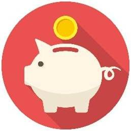
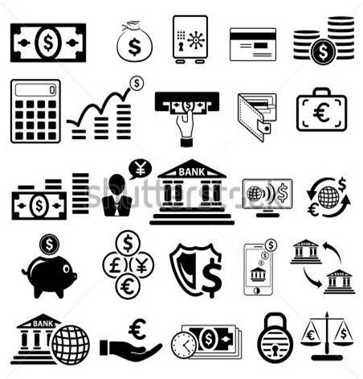
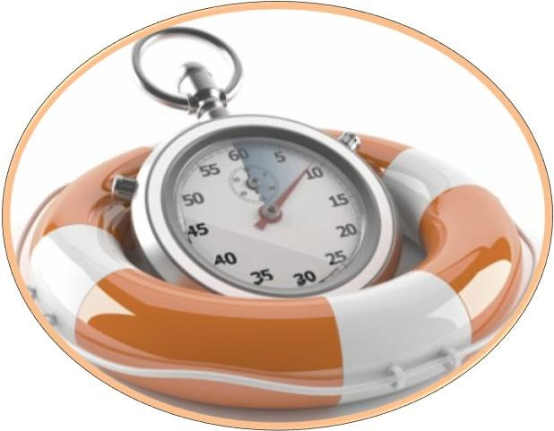
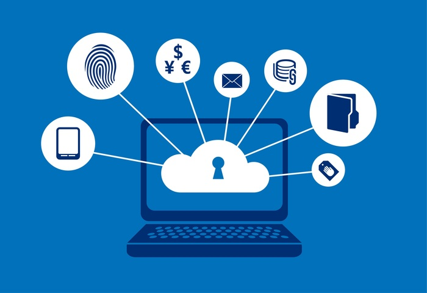
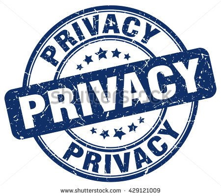
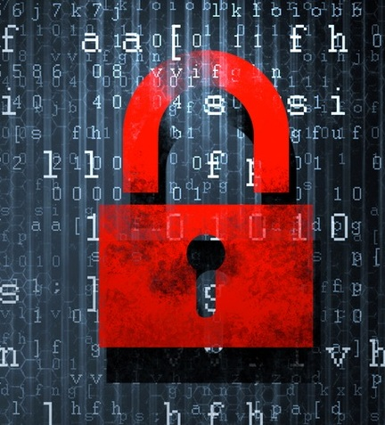

Banking and Shopping
Apart from shopping people can also carry out banking online. Banking online has a wide range of advantages. From what once was a hectic job, where people had to wait for a long time in long queues just transfer or withdraw small amounts of money, to a swift and convenient method because of advancements in ICT.
Not only do they save time, they also save transport or fuel charges as the individual need not travel and are very convenient to use.



All that the individual would need in order to perform online banking is a computer
(people can also do this using their smartphone) and an internet connection which is secure and stable. As there is no one else required, customers of the bank can have better control over their finances, get more privacy and finish things in a faster and more satisfying way. The personal information of the customers of the bank are kept secure with a lot of security measures. Also, the online websites of the bank offer more information and freedom than the physically present branches of the bank can.


Online banking still has a few issues associated with it. The personal information of the customers, including their PIN number which are very essential for any money transaction is constantly under the risk of being hacked by hackers. Even till this day (the day this sentence was written) online banking frauds do exist. Hopefully, security measures will become better.
